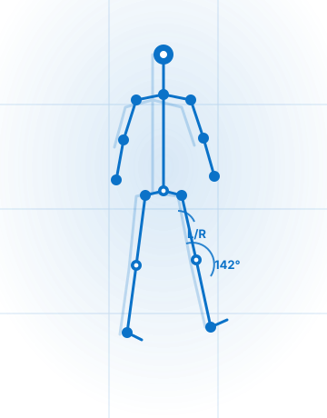

Body × AI ／ 理学療法士監修
国家資格を持つ理学療法士とAIが、つま先から頭まで全身を計測・可視化。今日から何を・どれだけ・どの頻度でやればいいかを、2枚のレポートで具体的に提案します。高齢の方からスポーツを楽しむ方、将棋など趣味を長く続けたい方まで。
※ 本サービスは医療行為ではなく、健康増進・予防を目的としたコンディショニング／運動サポートです。診断・治療は行いません。

こうした悩みは、あなただけのものではありません。その多くは“身体の使い方・動きのクセ”に手がかりがあります。
国家資格を持つ理学療法士・桑島海斗の、5年・全年代の臨床の視点を学習させたAIが、動作解析・問診・握力をもとに全身を多角的に可視化します。AIは評価の可視化と運動提案を“補助”するツール（非医療機器）で、最終的な提案は理学療法士が行います。目指すのは“治す”ことではなく、動きやすさとコンディションの変化。緩めたい部位・鍛えたい部位の目安が分かり、一緒に体を知って、楽しみながら変えていけます。
スマホ撮影の動作解析（OpenCap）で全身を可視化し、可動域・左右差・運動提案を読みやすいレポートにまとめます。

※ 画面・図はイメージです。動作データはブラウザ内で処理し、外部送信は最小限・匿名で扱います。
国家資格を持つ理学療法士・桑島海斗が、評価から運動提案まで一貫して担当。5年・全年代の臨床で培った視点で、あなたの身体を読み解きます。
動作解析・問診・握力を組み合わせ、つま先から頭まで多角的に計測。AIは可視化と運動提案の補助ツール（非医療機器）です。
何を・どれだけ・どの頻度でやればいいかを具体的に提示。緩めたい部位・鍛えたい部位の目安が分かるから、迷わず始められます。
再評価のたびにデータが蓄積。動きやすさやコンディションの変化を一緒に確認しながら、楽しんで続けられる設計です。
※ 痛みが強い・医療機関での対応が必要な場合は、まずかかりつけの医療機関にご相談ください。
下の予約フォームから希望日と「Google Meet（オンライン）／訪問」を選んで送信。オンラインの方には当日のGoogle Meetリンクをご案内します。所要60〜90分、動きやすい服装でご参加ください。
Google Meet（または訪問）で、今の悩み・目標・生活習慣・既往や外傷歴・スクリーンタイムまでお聞きし、何を変えたいかを一緒に整理します。
訪問はOpenCapの3D動作解析＋握力で全身を、オンラインはスマホ／Webカメラ＋姿勢AI（PostureRx）で姿勢・動作を計測。AIが分かりやすく可視化します。
一緒に運動・ストレッチを行い、理学療法士の視点で徒手的なケアや、自律神経を整えるセルフケアもご提案。すべてを評価し、あなたに必要なものだけを選んで2枚のレポートでお渡しします。
スマートウォッチを活用した運動習慣づくりのコツをご紹介。運動量・食事などのデータを蓄積して「あなた専用AI」を育て、変化を見ながら継続的に伴走します。
| メニュー | 訪問 | オンライン |
|---|---|---|
| 初回フル評価 問診＋動作解析＋AIレポート＋運動提案＋2枚レポート（60〜90分） | ¥9,800 | ¥6,800 |
| 再評価セッション 前回比較＋プログラム更新（30〜45分） | ¥5,500 | ¥5,500 |
| 月額メンバー 毎月2回（計測・評価・運動／徒手コンディショニング）＋経過レポート＋データ蓄積＋専用AI育成 | ¥12,000/月 | |
| 法人・施設・企業契約 人数に応じて調整 | 要問い合わせ | |
・すべて自費サービス（保険適用外・税込）。
・オンライン（Google Meet）は、OpenCapの3D動作解析の代わりにスマホ／Webカメラ＋姿勢AI（PostureRx）で評価するため、初回をお安く設定しています。
・出張費：半径5km以内は無料／以遠は1kmあたり¥100（上限¥2,000）。県外・遠方への出張は別途お見積りとなります。
・キャンセル：前日18時までのご連絡は無料／当日キャンセルは50%／無断キャンセルは100%を申し受けます。
・お支払い：当日現金、またはクレジットカード（決済リンク）。月額メンバーはカード自動課金。領収書を発行します。
希望日と「オンライン／訪問」を選んで送信してください。メールアプリが開き、内容が自動で入ります。あさって以降の日時からお選びください。
いいえ。本サービスは医療行為ではなく、健康増進・予防を目的としたコンディショニング／運動サポートです。診断や治療は行いません。
国家資格を持つ理学療法士・桑島海斗が担当します。5年・全年代の臨床経験を活かした運動提案・コンディショニングを行います。
AIは評価の可視化と運動提案の“補助”を担うツール（非医療機器）です。AIが診断や判断をすることはなく、最終的な提案は理学療法士が行います。
高齢の方、スポーツを楽しむ方、将棋など趣味の方、健康を伸ばしたい方など、あらゆる方が対象です。年齢や運動経験は問いません。
効果には個人差があり、変化を保証するものではありません。動きやすさやコンディションの変化を、データで一緒に確認しながら進めます。
訪問はOpenCapの3D動作解析が使える“フル評価”です。オンライン（Google Meet）はスマホ／Webカメラ＋姿勢AI（PostureRx）での評価となり内容が一部変わるため、初回をお安く設定しています。問診・運動提案・徒手的セルフケアの提案はどちらも行います。
当日現金、またはクレジットカード（決済リンク）。月額メンバーはカード自動課金です。領収書を発行します。
オンライン相談可・しつこい勧誘なし
kaito@frenvox.jp ／ 080-4343-2366 ／ frenvox.jp